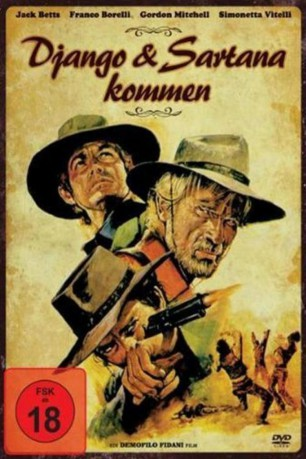

#7395 Django und Sartana kommen
Alternativ: Django and Sartana Are Coming... It's the End (Englischer Titel)
 
 IMDB-Wertung: 5.1 / 10
IMDB-Wertung: 5.1 / 10  Metascore: 0
Metascore: 0 
In diesem harten Western machen sich zwei Männer - ein Kopfgeldjäger und ein Revolvermann aus unterschiedlichen Motiven auf die Jagd nach Banditen, die ein Mädchen entführt haben. Der vermögende Vater ist Landbesitzer und bietet beiden eine hohe Belohnung für die Befreiung seiner Tochter...
Jahr: 1970
Dauer: 87 Minuten
FSK: 18
Land: Italien Studio: UIG EntertainmentTonspuren:
Untertitel:
Auflösung: 1080p (1920x1048) Größe: 7905 MB
Genre: Action, Drama, Western
Regisseur: Demofilo Fidani, Diego Spataro
Drehbuch: Ho-Cheung Pang
Soundtrack:
Darsteller:
 Jack Betts als Sartana
Jack Betts als Sartana Gordon Mitchell als Black Burt Keller / Burt Kelly
Gordon Mitchell als Black Burt Keller / Burt Kelly Attilio Dottesio als Old Miner
Attilio Dottesio als Old Miner Ettore Manni als Sheriff
Ettore Manni als Sheriff- Franco Borelli als Django
- Simonetta Vitelli als Jessica Brewster / Anne
- Celso Faria als Ramirez
- Benito Pacifico als Stinky
- Krista Nell als Cleo
- Paolo Rosani als Silky - Burt Keller's Brother
- Amerigo Castrighella als Deputy Sheriff
- Mariella Palmich als Lilly
- Mario Capuccio als
- Mario Dardanelli als Keller Henchman
- Giglio Gigli als
- Manlio Salvatori als Mr. Brewster
- Roberto Chiappa als
- Fulvio Pellegrino als Innkeeper
- Franco Corso als
- Isabella Spataro als
- Marcello Meconizzi als Bandit , uncredited
Datei: X:\FSK18-Western\Django und Sartana kommen (1970, FSK18, 1920x1048).mkv seit 08.11.2017
Festplatte: FSK18
 Es gibt insgesamt 25 Filme in der Gruppe 'FSK18-Western'
Es gibt insgesamt 25 Filme in der Gruppe 'FSK18-Western'